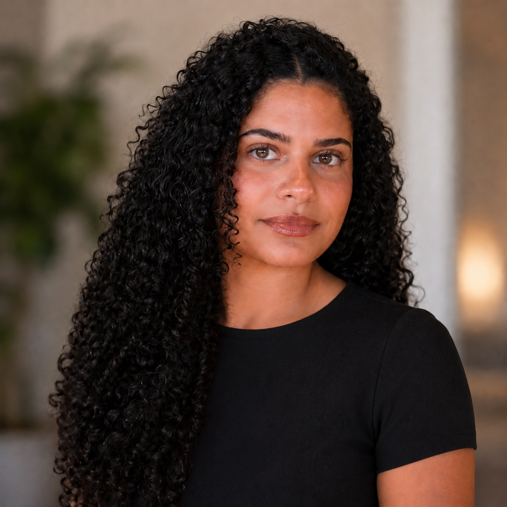

Communications Student · Tulane University
Turning ideas into impact through strategic communication.
Aspiring communications professional with a focus on public relations, strategic storytelling, and community engagement. Based in Berkeley, CA.
Get in touch
Start the Adventure in Reading · New Orleans, LA
Summer Camp · Berkeley, CA
I'm currently open to internship opportunities and collaborations in communications and PR.